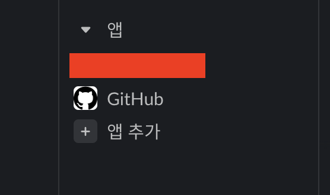
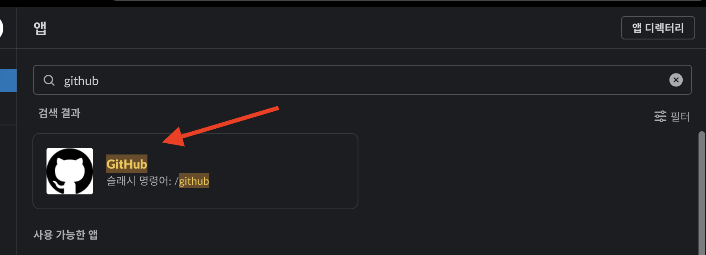
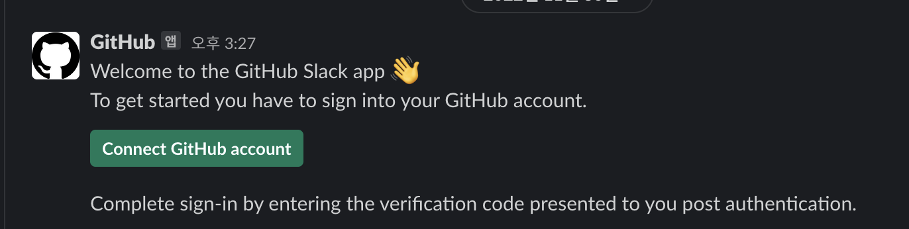
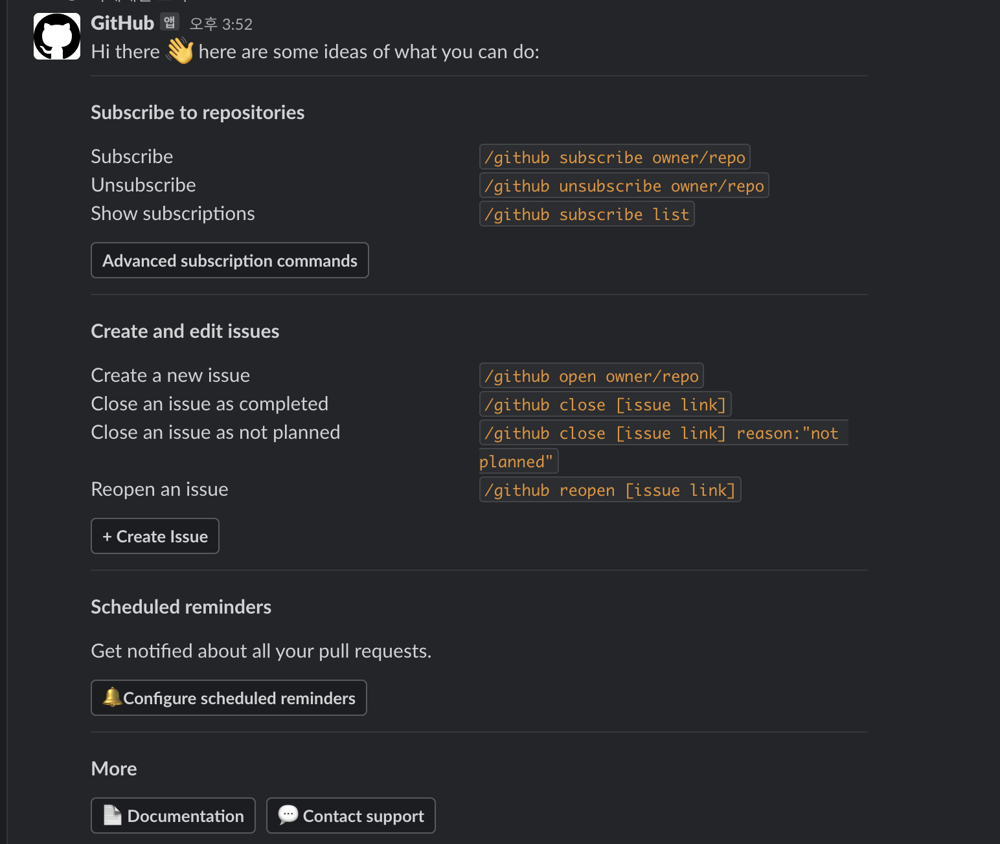

<meta charset="utf-8">
<html lang="ko">
<head>
    <link rel="stylesheet" type="text/css" href="./../style.css" />
    <title>[ Slack ] Slack과 Git 연동 - YEOL</title>
</head>
<body id="tt-body-page" class="">
<div id="wrap" class="wrap-right">
    <div id="container">
        <main class="main ">
            <div class="area-main">
                <div class="area-view">
                    <div class="article-header">
                        <div class="inner-article-header">
                            <div class="box-meta">
                                <h2 class="title-article">[ Slack ] Slack과 Git 연동 - YEOL</h2>
                                <div class="box-info">
                                    <p class="category">Office/Slack</p>
                                    <p class="date">2023-01-03 16:08:35</p>
                                </div>
                            </div>
                        </div>
                    </div>
                    <hr>
                    <div class="article-view">
                        <div class="contents_style">
                            <h4 data-ke-size="size20">?<span>&nbsp;</span><b>환경&nbsp;</b></h4>
<p data-ke-size="size16">Slack Client</p>
<h4 data-ke-size="size20">? <b>개요</b></h4>
<p data-ke-size="size16">사내 메신저가 Slack일 경우 git과 연동하여 노티를 자동화합니다</p>
<p data-ke-size="size16">&nbsp;</p>
<h2 data-ke-size="size26"><b>- How to use</b></h2>
<p data-ke-size="size16">Slack 좌측 하단에 앱추가 버튼을 눌러줍니다<br />그리고 검색에서 GitHub 앱을 추가합니다</p>
<p><figure class="imageblock alignCenter" data-origin-width="556" data-origin-height="330" data-is-animation="false" data-widthpercent="37.83" style="width: 37.3914%; margin-right: 10px;">
    <span data-lightbox="lightbox">
        
    </span>
    <figcaption></figcaption>
</figure><figure class="imageblock alignCenter" data-origin-width="1700" data-origin-height="614" data-is-animation="false" style="width: 61.4458%;" data-widthpercent="62.17">
    <span data-lightbox="lightbox">
        
    </span>
    <figcaption></figcaption>
</figure></p>
<p data-ke-size="size16">&nbsp;</p>
<p data-ke-size="size16">connect account 버튼을 클릭해 연동할 계정을 로그인합니다</p>
<p><figure class="imageblock alignCenter" >
    <span data-lightbox="lightbox">
        
    </span>
    <figcaption></figcaption>
</figure></p>
<p data-ke-size="size16">&nbsp;</p>
<p data-ke-size="size16">추가된 깃 앱에 아래의 명령어를 입력하면 어떤 명령어가 있는지 출력합니다<br />/github help</p>
<p><figure class="imageblock alignCenter" >
    <span data-lightbox="lightbox">
        
    </span>
    <figcaption></figcaption>
</figure></p>
<p data-ke-size="size16">위의 명령어를 따라 Git Repo를 구독하거나 취소할 수 있습니다<br />구독한 프로젝트에서 이슈를 생성하거나 pr을 날릴 때 등 <br />구독 중인 프로젝트의 변화를 노티 합니다</p>
<p data-ke-size="size16">이외 기능은 필요시 사용합니다</p>
<p data-ke-size="size16">&nbsp;</p>
<p data-ke-size="size16"><b><span style="background-color: #ffffff; color: #555555;">? 근거 있는 조언은 언제나 환영합니다</span><span style="background-color: #ffffff; color: #555555;">. 성실한 코딩</span><span style="background-color: #ffffff; color: #555555;"><span>&nbsp;</span>하세요.</span></b></p>
                        </div>
                        <br/>
                        <div class="tags">
                            #Git #slack #slack git 연동 
                        </div>
                    </div>
                </div>
            </div>
        </main>
    </div>
</div>
</body>
</html>
